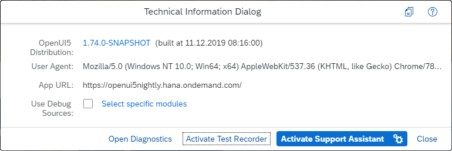

Test Recorder
The Test Recorder tool supports app developers who write integration and system tests.
The Test Recorder is part of the OpenUI5 framework and is available in all browsers. As of version 1.74, you can use the tool in any OpenUI5 app to inspect the rendered user interface (UI), view the control properties, and gain hints on writing tests. The Test Recorder is aligned with the two official OpenUI5 testing tools – OPA5 and UIVeri5.
Getting Started
There are two ways to open the Test Recorder:
-
In a separate window: Press CTRL + SHIFT + ALT + T
-
In an IFrame: Press CTRL + SHIFT + ALT + P to display the Technical Information Dialog and then choose Activate Test Recorder

The main sections of the tool are Control Tree, Snippet, and Common Info.
From the navigation actions at the top bar of the Test Recorder, you can minimize, resize, open it in a new window, or close the tool.
Control Tree and Common Information
In the Control Tree section, you can see the DOM structure of the current app page. When navigating to another page or view, the tree is automatically updated.
You can display more information in the Control Tree by selecting the Namespaces and Attributes checkboxes. Entering text in the Search field highlights all elements that (partially) match by namespace, control name, or attribute values.
There are three general types of testing-relevant information that you can gather for any control:
-
Position in the rendered control tree, type and ID – displayed in the Control Tree section. To see the control type, select the Namespace checkbox. To see the ID, select the Attributes checkbox.
-
Properties (either own or inherited) – displayed in the Common Info section on the Properties tab.
-
Bindings (binding context, properties, and aggregations) – displayed in the Common Info section on the Bindings tab.
Actions
You can perform the following actions on controls, either from the Control Tree or from the rendered UI of the app:
-
Highlight: Generates a code snippet for finding the control, which can be used to assert the control state.
-
Press: Generates a code snippet for pressing on the control.
-
Enter Text: Generates a code snippet for entering text into the control.
To perform an action from the Control Tree, right-click and choose Press or Enter Text in the context menu. If you want to highlight the respective control in the rendered UI, simply select the desired element in the tree.
To perform an action from the app page, right-click on any control and select the desired action from the context menu (the respective control is highlighted in the Control Tree).
Snippets
The code snippets generated by the Test Recorder usually contain a function invocation that locates one control on the app page. The function receives one argument – a control locator. The control location is a JSON object containing a specific combination of conditions and matchers.
The code snippet can be directly copied and pasted into your test code and is already aligned with the supported tools for testing – OPA5 and UIVeri5. To choose the tool for which to generate a code snippet, select an option from the Dialect dropdown menu. The raw selector option gives you just the control locator with no function invocations.